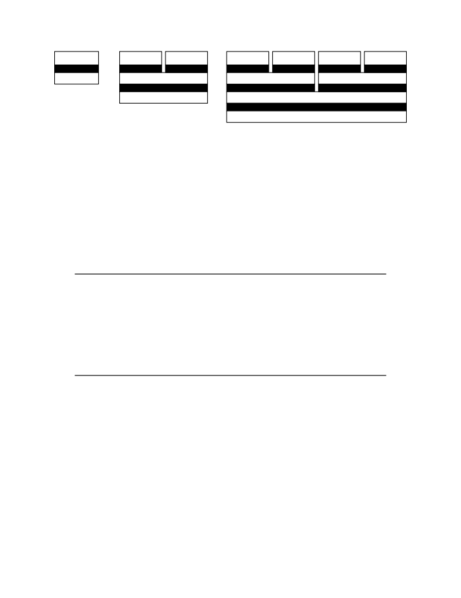

<table border="0" height="1453" width="1123">
<tr><td>
<div style="position:absolute; top:0; left:0;"></div>
<div style="position:absolute;top:74.119;left:132.145;"><nobr>
<span style="font-size:20.022;">2</span>
</nobr></div>
<div style="position:absolute;top:74.119;left:331.141;"><nobr>
<span style="font-size:20.022;font-style:italic;">Volume II: RISC-V Privileged Architectures V20190608-Priv-MSU-Ratified</span>
</nobr></div>
<div style="position:absolute;top:132.871;left:138.303;"><nobr>
<span style="font-size:19.725;">Application</span>
</nobr></div>
<div style="position:absolute;top:158.498;left:170.655;"><nobr>
<span style="font-size:19.725;color: #ffffff;">ABI</span>
</nobr></div>
<div style="position:absolute;top:132.871;left:294.395;"><nobr>
<span style="font-size:19.725;">Application Application</span>
</nobr></div>
<div style="position:absolute;top:158.498;left:326.747;"><nobr>
<span style="font-size:19.725;color: #ffffff;">ABI ABI</span>
</nobr></div>
<div style="position:absolute;top:132.871;left:555.326;"><nobr>
<span style="font-size:19.725;">Application Application Application Application</span>
</nobr></div>
<div style="position:absolute;top:158.498;left:587.678;"><nobr>
<span style="font-size:19.725;color: #ffffff;">ABI ABI ABI ABI</span>
</nobr></div>
<div style="position:absolute;top:181.795;left:166.816;"><nobr>
<span style="font-size:19.725;">AEE</span>
</nobr></div>
<div style="position:absolute;top:181.795;left:384.308;"><nobr>
<span style="font-size:19.725;">OS</span>
</nobr></div>
<div style="position:absolute;top:205.093;left:382.661;"><nobr>
<span style="font-size:19.725;color: #ffffff;">SBI</span>
</nobr></div>
<div style="position:absolute;top:181.795;left:645.239;"><nobr>
<span style="font-size:19.725;">OS</span>
</nobr></div>
<div style="position:absolute;top:205.093;left:643.592;"><nobr>
<span style="font-size:19.725;color: #ffffff;">SBI</span>
</nobr></div>
<div style="position:absolute;top:181.795;left:868.894;"><nobr>
<span style="font-size:19.725;">OS</span>
</nobr></div>
<div style="position:absolute;top:205.093;left:867.247;"><nobr>
<span style="font-size:19.725;color: #ffffff;">SBI</span>
</nobr></div>
<div style="position:absolute;top:228.390;left:378.823;"><nobr>
<span style="font-size:19.725;">SEE</span>
</nobr></div>
<div style="position:absolute;top:228.390;left:724.185;"><nobr>
<span style="font-size:19.725;">Hypervisor</span>
</nobr></div>
<div style="position:absolute;top:251.687;left:754.876;"><nobr>
<span style="font-size:19.725;color: #ffffff;">HBI</span>
</nobr></div>
<div style="position:absolute;top:274.985;left:751.037;"><nobr>
<span style="font-size:19.725;">HEE</span>
</nobr></div>
<div style="position:absolute;top:352.523;left:153.501;"><nobr>
<span style="font-size:20.022;">Figure 1.1: Different implementation stacks supporting various forms of privileged execution.</span>
</nobr></div>
<div style="position:absolute;top:414.617;left:132.145;"><nobr>
<span style="font-size:20.022;">The middle configuration shows a conventional operating system (OS) that can support multipro-</span>
</nobr></div>
<div style="position:absolute;top:439.484;left:132.145;"><nobr>
<span style="font-size:20.022;">grammed execution of multiple applications. Each application communicates over an ABI with</span>
</nobr></div>
<div style="position:absolute;top:464.351;left:132.145;"><nobr>
<span style="font-size:20.022;">the OS, which provides the AEE. Just as applications interface with an AEE via an ABI, RISC-V</span>
</nobr></div>
<div style="position:absolute;top:489.218;left:132.145;"><nobr>
<span style="font-size:20.022;">operating systems interface with a supervisor execution environment (SEE) via a supervisor binary</span>
</nobr></div>
<div style="position:absolute;top:514.085;left:132.145;"><nobr>
<span style="font-size:20.022;">interface (SBI). An SBI comprises the user-level and supervisor-level ISA together with a set of</span>
</nobr></div>
<div style="position:absolute;top:538.954;left:132.145;"><nobr>
<span style="font-size:20.022;">SBI function calls. Using a single SBI across all SEE implementations allows a single OS binary</span>
</nobr></div>
<div style="position:absolute;top:563.822;left:132.145;"><nobr>
<span style="font-size:20.022;">image to run on any SEE. The SEE can be a simple boot loader and BIOS-style IO system in a</span>
</nobr></div>
<div style="position:absolute;top:588.689;left:132.145;"><nobr>
<span style="font-size:20.022;">low-end hardware platform, or a hypervisor-provided virtual machine in a high-end server, or a</span>
</nobr></div>
<div style="position:absolute;top:613.556;left:132.145;"><nobr>
<span style="font-size:20.022;">thin translation layer over a host operating system in an architecture simulation environment.</span>
</nobr></div>
<div style="position:absolute;top:676.235;left:182.201;"><nobr>
<span style="font-size:18.285;font-style:italic;">Most supervisor-level ISA definitions do not separate the SBI from the execution environment</span>
</nobr></div>
<div style="position:absolute;top:698.176;left:182.201;"><nobr>
<span style="font-size:18.285;font-style:italic;">and/or the hardware platform, complicating virtualization and bring-up of new hardware plat-</span>
</nobr></div>
<div style="position:absolute;top:720.120;left:182.201;"><nobr>
<span style="font-size:18.285;font-style:italic;">forms.</span>
</nobr></div>
<div style="position:absolute;top:760.613;left:132.145;"><nobr>
<span style="font-size:20.022;">The rightmost configuration shows a virtual machine monitor configuration where multiple multi-</span>
</nobr></div>
<div style="position:absolute;top:785.480;left:132.145;"><nobr>
<span style="font-size:20.022;">programmed OSs are supported by a single hypervisor. Each OS communicates via an SBI with</span>
</nobr></div>
<div style="position:absolute;top:810.348;left:132.145;"><nobr>
<span style="font-size:20.022;">the hypervisor, which provides the SEE. The hypervisor communicates with the hypervisor execu-</span>
</nobr></div>
<div style="position:absolute;top:835.215;left:132.145;"><nobr>
<span style="font-size:20.022;">tion environment (HEE) using a hypervisor binary interface (HBI), to isolate the hypervisor from</span>
</nobr></div>
<div style="position:absolute;top:860.082;left:132.145;"><nobr>
<span style="font-size:20.022;">details of the hardware platform.</span>
</nobr></div>
<div style="position:absolute;top:922.761;left:182.201;"><nobr>
<span style="font-size:18.285;font-style:italic;">The ABI, SBI, and HBI are still a work-in-progress, but we are now prioritizing support for</span>
</nobr></div>
<div style="position:absolute;top:944.704;left:182.201;"><nobr>
<span style="font-size:18.285;font-style:italic;">Type-2 hypervisors where the SBI is provided recursively by an S-mode OS.</span>
</nobr></div>
<div style="position:absolute;top:985.196;left:132.145;"><nobr>
<span style="font-size:20.022;">Hardware implementations of the RISC-V ISA will generally require additional features beyond the</span>
</nobr></div>
<div style="position:absolute;top:1010.065;left:132.145;"><nobr>
<span style="font-size:20.022;">privileged ISA to support the various execution environments (AEE, SEE, or HEE).</span>
</nobr></div>
<div style="position:absolute;top:1090.631;left:132.145;"><nobr>
<span style="font-size:26.330;font-weight:bold;">1.2</span>
</nobr></div>
<div style="position:absolute;top:1090.631;left:199.577;"><nobr>
<span style="font-size:26.330;font-weight:bold;">Privilege Levels</span>
</nobr></div>
<div style="position:absolute;top:1158.704;left:132.145;"><nobr>
<span style="font-size:20.022;">At any time, a RISC-V hardware thread (</span>
<span style="font-size:20.022;font-style:italic;">hart</span>
<span style="font-size:20.022;">) is running at some privilege level encoded as a mode</span>
</nobr></div>
<div style="position:absolute;top:1183.572;left:132.145;"><nobr>
<span style="font-size:20.022;">in one or more CSRs (control and status registers). Three RISC-V privilege levels are currently</span>
</nobr></div>
<div style="position:absolute;top:1208.439;left:132.145;"><nobr>
<span style="font-size:20.022;">defined as shown in Table</span>
<span style="font-size:20.022;color: #000080;"><a href="#" onClick="javascript:parent.GotoNewPage(14); return false">1.1</a></span>
<span style="font-size:20.022;">.</span>
</nobr></div>
<div style="position:absolute;top:1251.591;left:132.145;"><nobr>
<span style="font-size:20.022;">Privilege levels are used to provide protection between different components of the software stack,</span>
</nobr></div>
<div style="position:absolute;top:1276.459;left:132.145;"><nobr>
<span style="font-size:20.022;">and attempts to perform operations not permitted by the current privilege mode will cause an</span>
</nobr></div>
<div style="position:absolute;top:1301.326;left:132.145;"><nobr>
<span style="font-size:20.022;">exception to be raised. These exceptions will normally cause traps into an underlying execution</span>
</nobr></div>
<div style="position:absolute;top:1326.193;left:132.145;"><nobr>
<span style="font-size:20.022;">environment.</span>
</nobr></div>
</td></tr>
</table>
